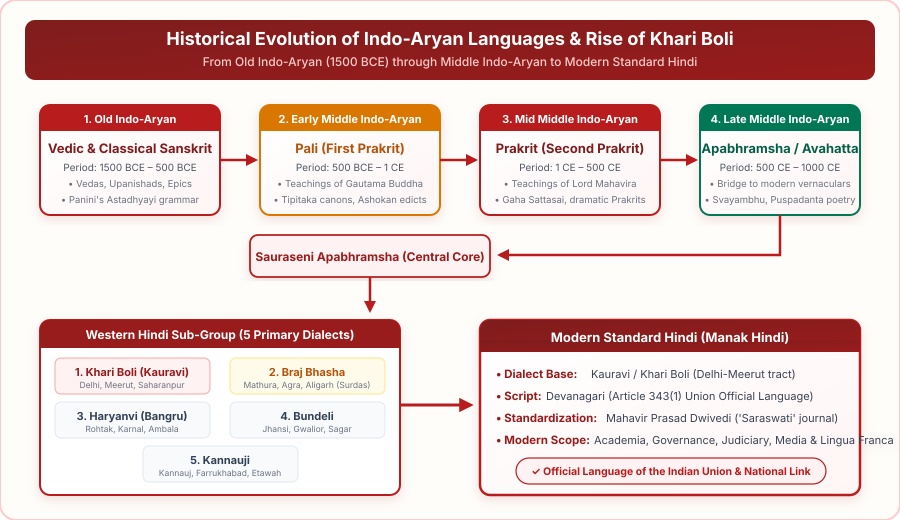
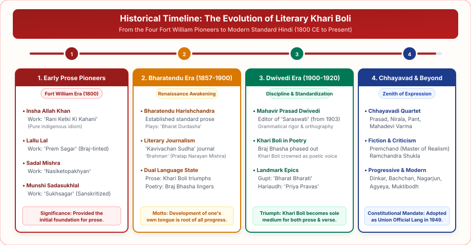
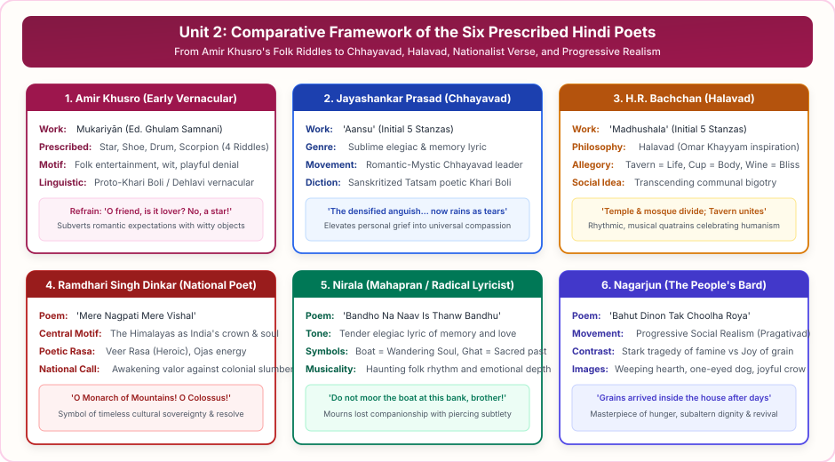
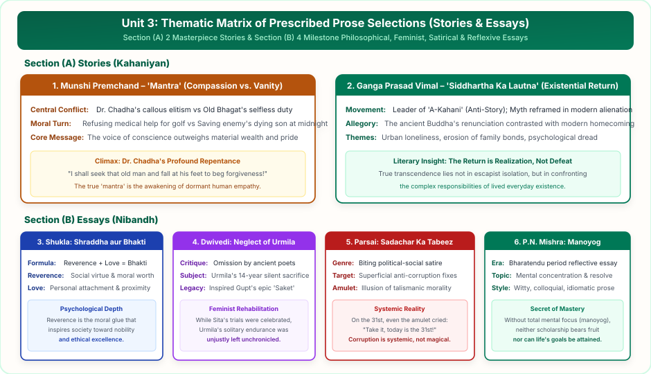

Definition, Meaning & Scope of Language • Historical Evolution of Literary Khari Boli
Chapter 1
Definition of Language: Meaning and Functional Scope
Introduction: Human society is anchored upon the gift of articulate speech. Language is the supreme instrument through which ideas, scientific insights, and artistic emotions are communicated across generations. In this chapter, we explore the etymological roots of language, classical and modern definitions, core linguistic traits, and the functional hierarchy distinguishing local dialects, regional vernaculars, standard idioms, and official languages.
1.1 Concept and Etymology of Language
The word 'Bhasha' (भाषा) originates from the Sanskrit root 'Bhash' (भाष्), denoting 'to speak', 'to utter', or 'to give voice to thought'. It represents the structured aggregate of meaningful vocal sound symbols produced by human speech organs through which members of a linguistic community communicate.
Classical Sanskrit Adage: Patanjali's Mahabhasya
"Vyakta Vachi Varna Yesham Ta Ime Vyakta-vachah." Meaning: That speech which is articulated in distinct phonemic syllables (varnas) is designated as true language.
1.2 Classical & Linguistic Definitions
1. Dr. Bholanath Tiwari (Leading Indian Linguist)
"Language is an organized system of arbitrary vocal sound symbols produced by vocal organs, through which members of a society interact and exchange thoughts."
2. Henry Sweet (Eminent Phonetician)
"Language may be defined as the expression of thought by means of speech-sounds."
1.3 Fundamental Characteristics of Language
1. Social Asset: Language is not personal inherited property; it is a collective creation preserved and nurtured by society.
2. Acquired Behavior: No human infant is born with a ready-made vocabulary; speech is learned through imitation and social conditioning.
3. Inherent Dynamism: Languages change continuously across geography and time — evolving from complex synthetic grammar toward simplified analytical syntax.
4. Arbitrary Symbolism: The relationship between a signifier (word) and signified (object) is conventional rather than organic (e.g., 'Water' in English, 'Paani' in Hindi, 'L'eau' in French).
1.4 Functional Dimensions and Linguistic Hierarchy
Spoken medium of domestic intimacy without rigid grammatical codification.
2. Sub-Language (Vibhasha)
Broad regional territories (e.g., Braj Bhasha, Awadhi in medieval era).
When a dialect develops an extensive body of classical literature (Surdas, Tulsidas).
3. Standard Language (Manak Bhasha)
National academia, press, and formal administration.
Grammatically standardized, uniform idiom based historically on the Khari Boli dialect.
4. Official Language (Rajbhasha)
Constitutional governance and legislative documentation.
Under Article 343(1) of the Indian Constitution: "The official language of the Union shall be Hindi in Devanagari script."

Figure 1.1: Linguistic tree from Old Indo-Aryan (Sanskrit) through Middle Indo-Aryan (Pali, Prakrit, Apabhramsha) to Modern Standard Hindi
Chapter 2
Historical Development of Literary Khari Boli
Introduction: Modern Standard Hindi is rooted in the Khari Boli (Kauravi) dialect of the Delhi-Meerut region. While Braj Bhasha and Awadhi dominated the medieval devotional period, the 19th century witnessed a revolutionary linguistic shift that established Khari Boli as the undisputed medium of modern prose and poetry.
2.1 The Four Early Prose Masters (Fort William College Era, c. 1800)
The dawn of modern prose was shaped decisively by four pioneer writers:
Pioneer Author
Seminal Work
Stylistic Milestone
1. Insha Allah Khan
Rani Ketki Ki Kahani
Pioneered pure, colloquial Hindustani prose free from heavy Persian or Sanskrit archaisms.
2. Lallu Lal
Prem Sagar
Authored melodic, Braj-tinted narrative prose at Fort William College.
3. Sadal Mishra
Nasiketopakhyan
Brought clarity and balanced rhythm based on the Upanishadic Nachiketa tale.
4. Munshi Sadasukhlal
Sukhsagar
Introduced dignified, disciplined Sanskritized diction to philosophical prose.
2.2 Bharatendu Renaissance and Dwivedi Era Standardization
The Bharatendu Epoch (1857–1900): Bharatendu Harishchandra transformed Khari Boli into the vehicle of modern patriotism, journalism, and theatre. However, poetry largely remained composed in Braj Bhasha.
The Dwivedi Era (1900–1920): Acharya Mahavir Prasad Dwivedi assumed editorship of 'Saraswati' in 1903. He enforced rigorous grammatical rules, standardized spelling, and mandated that poetry must also be written in Khari Boli. Landmark epics like Maithili Sharan Gupt's 'Bharat Bharati' and Hariaudh's 'Priya Pravas' proved Khari Boli's lyrical and epic grandeur.

Figure 2.1: Key developmental phases of Khari Boli from 1800 Fort William pioneers to contemporary Standard Hindi
Unit – 2
Poetic Selections (Padya Pathyansh)
Masterpieces of Amir Khusro, Jayashankar Prasad, H.R. Bachchan, Dinkar, Nirala, and Nagarjun

Figure 3.1: Literary matrix comparing the 6 prescribed poets across classical folk wit, Chhayavad, Halavad, and progressive social realism
Chapter 3
Amir Khusro – Mukariyān (Ed. Syed Ghulam Samnani)
Author & Genre: Amir Khusro (1253–1325 CE) was the pioneer poet of early vernacular Hindi (Hindavi). His 'Mukariyān' (denial riddles) are witty quatrains: three lines construct an intimate image hinting at the lover (Saajan), while the fourth line playfully denies it and reveals an everyday object.
3.1 The Four Prescribed Riddles (Text & Critical Translation)
Translation: He comes to me at night, and leaves for his home at the break of dawn. This wonder strikes me greatly. "O friend, is it your lover?" "No, dear friend, it is a star!"
(B) Riddle 2 : Joota (The Shoe)
Nange paanw phiran nahi det. Paanw ka keechad lagan nahi det.
Paanw ka kaanta kaadhan haara. Ai sakhi saajan? Naa sakhi Joota!
Translation: It lets me not walk barefoot; it keeps muddy mire away from my feet. It extracts every piercing thorn. "O friend, is it your devoted lover?" "No, dear friend, it is my shoe!"
(C) Riddle 3 : Dhol (The Wedding Drum)
Vah aave tab saadi hoye. Us bin dooja aur na koye.
Meethe laagen vaake bol. Ai sakhi saajan? Naa sakhi Dhol!
Translation: Wedding rites take place only when he arrives; without him none else matters. His notes sound sweetest to the ear. "O friend, is it your bridegroom?" "No, dear friend, it is the drum!"
(D) Riddle 4 : Bichhoo (The Scorpion)
Aradh nisha aaya vah maun. Moonchh pakad kai uthaave kaun.
Jaag padi to chakit bhayi bhaari. Ai sakhi saajan? Naa sakhi Bichhoo!
Translation: In the silent dead of night he arrived without a sound. Who could dare touch me so? I awoke in startled terror. "O friend, was it your daring lover?" "No, dear friend, it was a scorpion!"
Chapter 4
Jayashankar Prasad – Aansu (Initial 5 Stanzas)
Critical Context: Jayashankar Prasad's 'Aansu' (1925) is the supreme masterpiece of Chhayavadi lyricism. Composed after deep personal bereavement, the poem begins in acute individual anguish and progressively transforms into universal empathy and cosmic tenderness.
4.1 The Five Prescribed Stanzas: Original Text & Literary Analysis
Literary Analysis: Just as atmospheric moisture condenses into dark clouds before pouring down as torrents on gloomy rainy days (durdin), the dense, accumulated grief in the poet's memory has reached saturation and now pours forth as cathartic tears.
Chapter 5
Harivansh Rai Bachchan – Madhushala (Initial 5 Stanzas)
Philosophical Context: Published in 1935, 'Madhushala' established the poetic school of 'Halavad'. Drawing inspiration from Omar Khayyam's Rubaiyat, Bachchan constructs an elaborate allegory: Wine represents the joy of living, the Goblet symbolizes the human vessel, the Tavern Keeper (Saki) stands for spiritual inspiration, and the Tavern (Madhushala) is the universe itself.
5.1 Prescribed Stanzas: The Unity of Humanity
Stanza 4: Secular Harmony (Immortal Anthem)
Dharmagranth sab ek sikhaate, madiralaya ka dwaar khula,
Mandir, masjid bair karaate, mel karaati Madhushala!
Appreciation: Bachchan delivers a stinging critique of sectarian dogmatism. While temples and mosques have historically fostered institutional divides, the humanist tavern embraces all seekers on an equal footing without distinction of caste, creed, or status.
Chapter 6
Ramdhari Singh Dinkar – Mere Nagpati Mere Vishal
Context: National Poet Ramdhari Singh Dinkar invokes the majestic Himalayas as the living sentinel of India's eternal sovereignty. Infused with Veer Rasa (heroic sentiment) and fiery Ojas, the poem calls upon the guardian mountain to awaken the country from colonial subjugation.
6.1 Key Verses and National Symbolism
Heroic Invocation
Mere nagpati! Mere vishal!
Saakshaat roop amartaa ka, jag ke kundal! He tung bhaal!
Thematic Core: The poet questions the meditative detachment of the sage-like Himalayas: when the motherland is trampled under foreign yokes, contemplative silence must yield to righteous heroic mobilization.
Chapter 7
Suryakant Tripathi 'Nirala' – Bandho Na Naav Is Thanw Bandhu
Context: A poignant elegy of love, memory, and spiritual restraint. Nirala pleads with the boatman not to moor the vessel at the riverside landing where beloved memories linger, fearing that the village will probe wounds too intimate for words.
7.1 Poetic Structure & Melodic Resonance
Lyrical Refrain
Bandho na naav is thanw, bandhu! Poochhega saara gaanw, bandhu!
Appreciation: The river bank becomes a sacred memorial of past beauty; the poem demonstrates Nirala's mastery of folk musical cadence and melancholic understatement.
Chapter 8
Nagarjun – Bahut Dinon Tak Choolha Roya
Context: Regarded as one of the most powerful eight-line poems in world literature, 'Famine and Thereafter' captures the subaltern reality of rural hunger.
8.1 Contrast Between Starvation and Revival
The Two Contrasting Tableaus
Bahut dinon tak choolha roya, chakki rahi udaas...
Daane aaye ghar ke andar bahut dinon ke baad!
Sociological Realism: The weeping hearth, idle stone mill, and disabled dog portray the silence of famine, while rising smoke and eyes illuminated with hope celebrate the primal triumph of bread.
Unit – 3
Prose Selections: Stories & Essays
Section (A) Stories: Premchand & Ganga Prasad Vimal • Section (B) Essays: Shukla, Dwivedi, Parsai, and Mishra

Figure 4.1: Structural matrix of the 2 prescribed realistic/existential stories and 4 milestone intellectual essays
Chapter 9 (Story 1)
Munshi Premchand – Mantra
Critical Synthesis: Premchand's 'Mantra' dramatizes the moral collision between Dr. Chadha's arrogant Westernized professional elitism and old Bhagat's selfless human devotion. Bhagat's midnight intervention to extract fatal cobra venom from Dr. Chadha's dying son proves that innate human conscience transcends vengeance.
9.1 Narrative Climax and Thematic Significance
The true 'mantra' in Premchand's art is not occult incantation, but the spiritual awakening of compassion within cold urban pride. Dr. Chadha's ultimate repentance marks the triumph of altruistic duty over vanity.
Chapter 10 (Story 2)
Ganga Prasad Vimal – Siddhartha Ka Lautna
Critical Synthesis: Dr. Ganga Prasad Vimal, a pioneer of the 'A-Kahani' (Anti-Story) movement, reframes the ancient Buddhist departure myth into a contemporary dilemma. The protagonist discovers that modern salvation is found not in deserting human ties, but in returning to confront urban alienation and domestic responsibility.
Chapter 11 (Essay 1)
Acharya Ramchandra Shukla – Shraddha aur Bhakti
Critical Synthesis: From Shukla's seminal collection 'Chintamani', this essay formulates that "Bhakti is the synthesis of Reverence (Shraddha) and Love (Prem)." Reverence is social, moral, and inspired by virtue; love is personal and proximity-based.
Chapter 12 (Essay 2)
Mahavir Prasad Dwivedi – Neglect of Urmila by Ancient Poets
Critical Synthesis: Published in 1908 in 'Saraswati', Dwivedi indicts Valmiki and Kalidasa for marginalizing Lakshmana's wife Urmila, who endured 14 years of silent agony in the royal palace. This essay directly inspired Maithili Sharan Gupt's epic masterpiece 'Saket'.
Chapter 13 (Essay 3)
Harishankar Parsai – Sadachar Ka Tabeez
Critical Synthesis: A razor-sharp satire on bureaucratic anti-corruption gimmicks. When a king ties morality amulets on state employees, bribery ceases until the 31st of the month, when even the amulet whispers: "Take it, today is the 31st!" Parsai establishes that corruption is systemic, not mystical.
Chapter 14 (Essay 4)
Pratap Narayan Mishra – Manoyog
Critical Synthesis: A lively, idiomatic reflection from the Bharatendu era arguing that without 'Manoyog' (unwavering concentration of the mental faculties), neither academic scholarship nor worldly pursuits can attain true success.